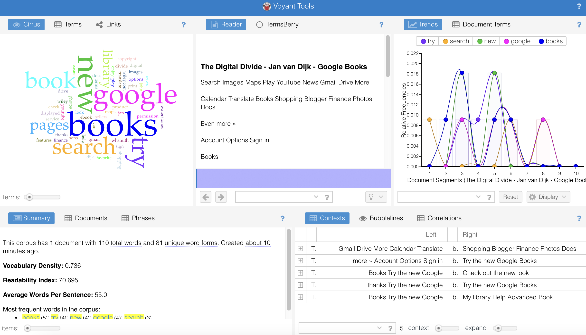

Review Professional Writing Characteristics
Source - "What is the Digital Divide"Accuracy - statistics and reliable sources were used
Active Voice - active
Limit Biases - they is used instead of he/she, age is used when backing up statistics
Clarity - straightforward
Conciseness - facts and figures are concise within paragraphs
Conversational and Smoothly Flowing Prose - simple language
Correctness - language is high standard, as this source is a textbook
Parallelism - there may not be anu exact phrases which relate to paralelism but there are a fair amount of parallels between digital divide terms
Positive Voice - neutral opinion
Strong Nouns and Verbs - official use of language=
Sentence Variety - structure isn't repetitive
Simple Words - recognisable language
Shorter Paragraphs - longer paragraphs as this text is within an academic textbook
Tone and Voice - formal voice
I feel confident that I could use writing characteristics and the AWE writing process to discuss my topic. I have gathered the majority of information needed to complete these tasks in the past few weeks, such as defining my audience and their purpose for learning about the digital divide. Also created html and stylesheets for the final website project due next semester, and I have evaluated my structure and defined the sources that will be used. I believe I need to put in more work to ensure that my language is both concise and smooth enough for my users to fully understand my topic and what I’m trying to achieve. Although my project has been outlined in detail, there may still be some missing information that is needed to make sure users have a grasp on the topic. However, I’m confident that with more research, I’ll be able to provide more detailed and comprehensive information.
Part One - Using Voyant Tools
Source - "What is the Digital Divide"
Part Two - Explore Sections
This tells us that the material seems to be focused on the internet (search, google) and different ways it may be used (try, new).
The words 'try', 'new' and 'books' feature heavily in the beginning to middle of the chapter, possibly establishing context, but they aren't as significant in the analysis or concluding statements of the chapter. Whereas the word 'google' features the most in the analysis and conclusion of the chapter indicating that new ideas may be presented, this makes sense as 'Google' is a technological component which is being pushed on the digital world.
Part Three - Compare and Write Up
The average amount of words per sentence for this chapter is 55. According to google, the average is typically 15-20 words. This shows that this chapter has lengthy sentences that may have to be broken down a bit more than a simpler, smaller sentence. This is typical for many academic resources, as they can be wordy or lengthy.
The words used relate closely to one another, such as 'books', 'pages', 'library' or 'photos', 'images', 'print'. This shows that the topics focused on are linked but not repetitive, as new concepts and analysis is introduced throughout the chapter, relating back to relevant information.
Narrative Point - Causes of the Digital Divide
Statement - The lack of digital literacy in education is one of the main causes of the digital divide in the UK.
The digital divide can be defined as the unequal access to digital technology. It has become more apparent in education, especially during the COVID-19 lockdown period when online teaching transformed the way we learn. Digital skills not only give us the ability to use digital devices and software, but also the capability to critically evaluate and navigate digital information.
In present day, digital literacy skills are becoming essential for education as technology is developing rapidly. Having the ability to use technology effectively is important as individuals who lack these skills may fall behind in their learning. Online teaching has become increasingly popular and requires digital literacy skills to ensure that students are producing their best work despite the circumstances. Students who lack these skills face challenges in accessing, understanding, and utilising online educational resources.
To conclude, having digital literacy skills is essential for students in today’s world. The lack of these skills creates a digital divide between students who have access to technology and those who don’t. This not only affects academic outcomes but also broader implications for future success in a world driven by technology.
Narrative Point - Solutions to the Digital Divide
Statement - Educational institutions should offer technology to those who are being affected by the digital divide.
The digital divide can be defined as the unequal access to digital technology. It has become more apparent in education, especially during the COVID-19 lockdown period when online teaching transformed the way we learn. The lack of budget for some families, means they will not be able to afford technological devices or broadband services, which makes it difficult for their children to work from home.
Nowadays, technology has become ubiquitous and is being used by people in almost every aspect of their lives. Education is not different. Students are expected to research, plan and complete assignments and assessments using the Internet and software applications from their homes. However, those who do not have access to these resources are at a disadvantage, and this digital divide is affecting them. It is unfair that some can complete their work from the comfort of their homes while other are compelled to rely on public buildings that offer technology services. Nonetheless, if educational institutions provide students with digital devices that they can use for learning, it would make a major difference in bridging this digital divide.
To conclude, the offering of digital devices to students has many benefits, including increasing fairness between individuals and promoting better academic ability. An equal access to digital devices between students, allows students from different backgrounds to have the same opportunities. Overall, providing educational institutions with digital devices is a valuable investment in their education and will result positively.
For causes, this narrative effectively highlights the impact of the digital divide on education. It emphasises the crucial role of digital literacy in shaping academic success. By linking the issue within the recent and relatable context of the COVID-19 lockdown period, the narrative links it to the overall target audience of this multimedia website. As the website focuses on a target audience which went through schooling during lockdown, which is still being implemented in schools in present-day.
For solutions, this narrative reveals a clear understanding of the economic barriers that lead to unequal access to technology. Highlighting the lack of financial resources for some families, it grounds the issue in socioeconomic realities and makes a compelling case for educational institutions to take action. This is relevant to the target audience of this multimedia website as it focuses on education aspects and communities, such as those in the UK that face challenges.